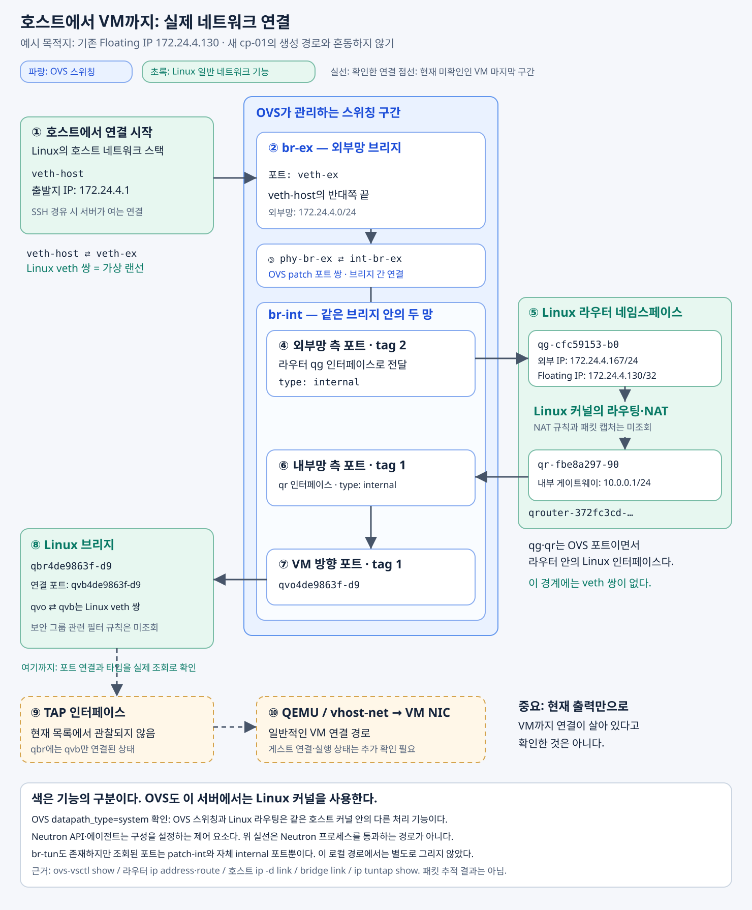

OVS·가상 라우터·Linux 브리지·TAP의 역할과 연결 구조
OpenStack의 VM에 접속하려면 패킷이 여러 가상 네트워크 요소를 거친다. OVS, 라우터 네임스페이스, Linux 브리지, TAP이 차례로 등장하지만, 각각은 서로 다른 문제를 해결한다.
OVS는 네트워크 안에서 트래픽을 전달하고, Linux 라우터는 네트워크 사이의 라우팅과 주소 변환을 처리한다. Linux 브리지는 VM 앞의 연결 구간을 제공하며, TAP은 호스트 네트워크와 VM의 가상 랜카드를 연결한다.
이 글은 실제 조회한 OVS 기반 OpenStack 환경을 바탕으로, 호스트에서 VM의 Floating IP로 접속하는 경로를 설명한다. 조회로 확인한 구성과 일반적인 동작 원리를 구분하며, 현재 확인하지 못한 VM 연결 구간도 함께 표시한다.
1. Neutron은 설정을 관리하고, 실제 패킷은 OVS와 Linux가 처리한다
Neutron은 OpenStack의 네트워크 관리 서비스다. 사용자가 네트워크·라우터·포트·보안 그룹을 선언하면, 관련 드라이버와 에이전트를 통해 실제 호스트의 네트워크 설정으로 구현한다.
여기서 두 흐름을 구분해야 한다.
| 구분 | 흐름 | 역할 |
|---|---|---|
| 제어 평면 | Terraform → Neutron API → 관련 드라이버·에이전트 → 호스트 설정 | 네트워크 연결과 전달·보안 규칙 구성 |
| 데이터 평면 | 가상 인터페이스 → OVS → Linux 네트워크 처리 → VM 연결 | 실제 트래픽 전달 |
VM으로 보내는 패킷이 매번 Neutron API 서버나 에이전트 프로세스를 통과하는 것은 아니다.
“패킷이 Neutron 라우터로 들어간다”는 표현도 Neutron 프로그램이 패킷을 받아 중계한다는 뜻이 아니다. Neutron이 만들어 관리하는 가상 라우터의 실제 구현부에서 패킷을 처리한다는 의미다.
이 환경에서는 Linux 커널이 라우터 네임스페이스의 인터페이스·라우팅 테이블·NAT 설정을 사용해 처리한다.
2. 호스트부터 VM까지의 전체 연결 구조
실제 조회한 요소를 연결하면 다음과 같다.


그림의 파란색은 OVS가 관리하는 스위칭 구간이고, 초록색은 Linux의 일반적인 네트워크 기능이다.
색상이 서로 다른 운영체제를 의미하지는 않는다. 이 서버의 OVS는 datapath_type=system으로 구성되어 Linux 커널의 데이터패스를 사용한다. 같은 호스트 안에서 OVS 스위칭과 일반 Linux 라우팅·브리지 기능의 책임을 구분한 것이다.
전체 흐름은 다음과 같다.
호스트
→ veth 쌍
→ OVS br-ex
→ OVS br-int의 외부망
→ Linux 가상 라우터
→ OVS br-int의 내부망
→ VM 방향 veth 쌍
→ Linux 브리지
→ TAP
→ QEMU 또는 vhost-net
→ VM의 가상 랜카드
현재 조회에서는 TAP 장치가 관찰되지 않았다. 따라서 TAP 이후는 일반적인 VM 연결 구조를 표시한 것이며, 현재 전체 경로가 활성화돼 있다는 뜻은 아니다.
3. 172.24.4.1은 프로세스의 주소가 아니라 호스트 인터페이스의 주소다
하나의 서버에도 여러 네트워크 인터페이스가 있으며, 각각 다른 IP 주소를 가질 수 있다.
조회된 주요 주소는 다음과 같다.
| 위치 | 주소 | 역할 |
|---|---|---|
호스트의 wlo1 |
192.168.50.217 |
집 LAN에 연결된 무선랜 주소 |
호스트의 veth-host |
172.24.4.1/24 |
OpenStack 외부 네트워크와 통신하는 주소 |
| 호스트의 기본 게이트웨이 | 192.168.50.1 |
집 공유기 |
가상 라우터의 qg-… |
172.24.4.167/24 |
라우터의 외부망 주소 |
가상 라우터의 qr-… |
10.0.0.1/24 |
VM 내부망의 게이트웨이 |
172.24.4.1은 OpenStack 프로세스에 붙은 주소가 아니라, 호스트 Linux의 veth-host 인터페이스에 붙은 주소다.
호스트에서 기존 Floating IP 방향의 경로를 조회했을 때 다음과 같이 나왔다.
172.24.4.130 dev veth-host src 172.24.4.1
이는 해당 목적지로 패킷을 보낼 때 veth-host를 사용하고, 출발지 주소로 172.24.4.1을 선택한다는 의미다.
따라서 맥이 호스트를 SSH 경유지로 사용하면, 호스트에서 VM 쪽으로 여는 연결의 출발지가 이 주소가 된다.
또한 게이트웨이는 누구의 관점인지에 따라 달라진다. 가상 라우터의 기본 경로는 다음과 같았다.
default via 172.24.4.1 dev qg-cfc59153-b0
즉, 172.24.4.1은 호스트의 인터페이스 주소이면서 가상 라우터 입장에서는 기본 게이트웨이다. 호스트 자신의 기본 게이트웨이인 집 공유기 주소와는 구분해야 한다.
4. veth는 가상 랜선이고, OVS는 가상 스위치다
호스트와 OVS 사이에는 다음 연결이 있었다.
veth-host ⇄ veth-ex
두 인터페이스는 Linux의 veth pair, 즉 가상 이더넷 쌍이다. 한쪽으로 보낸 이더넷 프레임은 반대쪽에서 수신된다.
컨테이너 네트워크에서도 같은 기능을 사용한다. 흔히 한쪽은 호스트에 두고, 다른 쪽은 컨테이너의 네트워크 네임스페이스에 배치한다.
하지만 veth를 사용한다고 반드시 네임스페이스가 분리돼 있어야 하는 것은 아니다. 이 환경의 두 인터페이스는 호스트의 같은 네트워크 네임스페이스에서 확인됐다. 그중 veth-ex가 OVS에 연결돼 있다.
Open vSwitch, 줄여서 OVS는 소프트웨어로 구현한 스위치다. OpenStack 전용 프로그램이 아니라 여러 가상화 환경에서 사용할 수 있는 독립적인 프로젝트다. 가상 인터페이스들을 연결하고, 설정된 규칙에 따라 트래픽을 전달한다. OVS 공식 소개
둘의 관계는 다음과 같다.
- veth 쌍: 두 연결 지점을 잇는 가상 랜선.
- OVS 브리지: 여러 포트를 연결하고 전달 방향을 결정하는 가상 스위치.
OVS가 IP 등을 확인하는 규칙을 처리할 수도 있지만, OVS에 패킷이 들어오기만 하면 목적지 VM을 자동으로 찾아 라우팅하는 것은 아니다. 구성된 네트워크와 전달 규칙에 따라 동작한다.
5. OVS의 br-ex와 br-int는 patch 포트로 연결된다
OVS 하나가 가상 스위치 하나만 제공하는 것은 아니다. 여러 브리지를 만들고 연결할 수 있다.
이 경로에서 사용하는 주요 브리지는 다음 두 개다.
| 브리지 | 역할 |
|---|---|
br-ex |
외부 네트워크와 연결 |
br-int |
VM·라우터 등의 연결을 통합하고 가상 네트워크를 구분 |
veth-ex는 br-ex의 포트다. 따라서 호스트가 veth-host로 보낸 트래픽은 veth-ex를 통해 br-ex에 들어온다.
두 브리지는 다음 포트 쌍으로 연결된다.
br-ex의 phy-br-ex ⇄ br-int의 int-br-ex
조회 결과에서 두 인터페이스의 타입은 patch였고, 서로를 peer로 지정하고 있었다.
OVS patch 포트는 OVS 브리지 사이를 연결하는 기능이다. Linux veth와 연결선 역할은 비슷하지만, 같은 장치는 아니다.
따라서 이 구간은 다음 순서로 이어진다.
veth-host
→ veth-ex
→ br-ex
→ phy-br-ex ⇄ int-br-ex
→ br-int
br-int에는 여러 가상 네트워크의 포트가 함께 연결돼 있다. 관찰된 설정에서는 외부망 측 라우터 포트에 tag: 2, 내부망 측 포트에 tag: 1이 붙어 있었다.
이는 해당 호스트의 OVS에서 네트워크를 구분하는 로컬 VLAN 태그다. 하나의 브리지에 연결돼 있더라도 외부망과 내부망이 그대로 섞이는 것은 아니다.
6. Floating IP로 들어온 패킷에 라우터가 필요한 이유
같은 내부망의 VM끼리 통신한다면 일반적으로 라우터를 거치지 않고 스위칭으로 전달할 수 있다.
하지만 지금 설명하는 것은 외부망에서 VM의 Floating IP로 접속하는 상황이다.
Floating IP는 외부에서 접근할 주소를 VM의 Fixed IP에 연결한다. 다음은 그 관계를 설명하기 위한 예다.
Floating IP VM의 Fixed IP
172.24.4.130 ↔ 10.0.0.236
외부에서 보낸 패킷의 목적지는 172.24.4.130이다. VM에 설정된 주소는 10.0.0.236이므로, 목적지 주소를 그대로 둔 채 VM으로 전달하는 것만으로는 원하는 통신이 성립하지 않는다.
라우터는 다음 작업을 수행한다.
- 목적지 IP를 Floating IP에서 VM의 Fixed IP로 변경한다.
- 해당 Fixed IP가 속한 내부망으로 라우팅한다.
목적지 주소를 바꾸는 처리를 DNAT, 목적지 주소 변환이라고 한다. 응답 방향에서는 연결 추적과 NAT 처리에 따라 외부에서 보이는 주소가 다시 Floating IP가 된다. OpenStack의 Floating IP 흐름
여기서 바뀌는 것은 VM 자체가 아니라 패킷의 주소 정보다.
또한 Floating IP가 반드시 인터넷 공인 IP인 것은 아니다. 이 환경의 Floating IP는 사설 주소이므로, 해당 외부 네트워크까지 도달할 수 있는 경로가 있어야 접속할 수 있다.
7. 라우터 네임스페이스와 OVS는 internal 포트로 연결된다
Linux 네트워크 네임스페이스는 인터페이스·IP 주소·라우팅 테이블 등의 네트워크 상태를 분리하는 기능이다.
OpenStack은 여러 가상 라우터를 제공하므로, 각 라우터가 독립적인 네트워크 설정을 가질 수 있어야 한다. 이 구성에서는 라우터별 Linux 네트워크 네임스페이스를 사용한다.
조회된 라우터 네임스페이스는 다음과 같다.
qrouter-372fc3cd-9ae2-45e6-af71-56eb5b9c72c2
그 안의 주요 인터페이스는 다음 두 개다.
| 인터페이스 | 주소 | 역할 |
|---|---|---|
qg-cfc59153-b0 |
172.24.4.167/24, 172.24.4.130/32 |
외부망 연결 측 |
qr-fbe8a297-90 |
10.0.0.1/24 |
VM 내부망 연결 측 |
네임스페이스 자체가 패킷을 처리하는 프로그램은 아니다. Linux 커널이 해당 네임스페이스의 설정을 사용해 라우팅과 NAT를 처리한다.
OVS 조회에서는 동일한 qg-…, qr-… 인터페이스가 다음 타입으로 나타났다.
type: internal
이는 OVS의 포트가 Linux 네트워크 인터페이스로 제공되고, 그 인터페이스가 라우터 네임스페이스 안에 배치된 구조다. 이 구간에는 별도의 veth 쌍이 없다. Neutron의 OVS 인터페이스 드라이버는 설정에 따라 internal 포트 방식이나 veth 방식을 사용할 수 있다. Neutron 구현 코드
패킷은 다음과 같이 흐른다.
br-int의 외부망
→ qg
→ Linux 커널의 라우팅·NAT
→ qr
→ br-int의 내부망
같은 br-int로 돌아오지만, 외부망에서 내부망으로 이동한 것이다.
qr은 특정 VM 전용 포트가 아니다. 여러 VM이 있는 내부망으로 연결되는 라우터의 인터페이스다. OVS는 이 인터페이스를 통해 받은 트래픽을 해당 VM 방향의 포트로 전달한다.
8. VM 앞의 Linux 브리지는 보안 그룹을 적용하는 연결 구간을 제공한다
내부망으로 돌아온 트래픽은 br-int의 VM 방향 포트로 전달된다.
실제 관찰된 연결은 다음과 같다.
br-int
→ qvo4de9863f-d9
⇄ qvb4de9863f-d9
→ qbr4de9863f-d9
여기서 qvo와 qvb는 Linux veth 쌍이다.
qvo는 OVS에 연결된다.qvb는 Linux 브리지인qbr에 연결된다.
Linux 브리지도 가상 스위치다. 연결된 인터페이스 사이에서 목적지 MAC 주소를 기준으로 프레임을 전달한다.
OVS가 있는데 브리지를 하나 더 두는 이유는, 이런 구성에서 Linux 방화벽 기능을 이용해 VM의 보안 그룹을 적용하기 위해서다. OVS의 스위칭 기능과 Linux 방화벽 기능을 조합하는 방식이다.
다만 브리지와 방화벽의 책임은 구분해야 한다.
| 요소 | 책임 |
|---|---|
qbr Linux 브리지 |
OVS 쪽과 VM 쪽 연결 사이에서 프레임 전달 |
| Linux 방화벽 기능 | 보안 그룹 규칙에 따라 허용·차단 판단 |
| Neutron의 관련 에이전트 | 연결과 보안 규칙 설정 |
Linux 브리지 자체가 보안 그룹이거나 방화벽인 것은 아니다. 브리지로 전달 경로를 만들고, 그 구간에 방화벽 처리를 결합하는 것이다.
현재 확인한 qvo ↔ qvb → qbr은 이런 하이브리드 구성의 형태다. 구체적인 방화벽 규칙은 아직 조회하지 않았으므로, 어떤 트래픽이 실제로 허용되는지까지 확인한 것은 아니다.
9. TAP은 호스트 네트워크와 VM의 가상 랜카드를 연결한다
Linux 브리지가 프레임을 전달하더라도, 그것을 VM의 가상 랜카드에 전달할 접점이 필요하다. 그 역할을 하는 것이 TAP 인터페이스다.
TAP은 호스트 Linux에서 네트워크 인터페이스로 보인다. 물리 랜카드가 실제 케이블로 프레임을 주고받는 것과 달리, TAP은 QEMU 같은 프로그램이 이더넷 프레임을 읽고 쓸 수 있는 통로를 제공한다.
QEMU가 직접 네트워크 데이터를 처리하는 경우, 수신 방향은 다음과 같다.
Linux 브리지
→ TAP에 이더넷 프레임 전달
→ QEMU가 프레임을 읽음
→ VM의 가상 랜카드에 수신 데이터로 제공
→ 게스트 OS의 네트워크 드라이버와 커널이 처리
따라서 다음 설명은 QEMU가 직접 처리하는 경로를 잘 나타낸다.
TAP은 Linux 브리지에서 받은 프레임을 QEMU가 읽어서 VM의 가상 랜카드에 전달할 수 있게 하는 통로다.
VM이 데이터를 보내는 방향은 반대다.
VM의 가상 랜카드
→ QEMU가 송신 프레임을 처리
→ TAP에 프레임을 씀
→ 호스트 Linux 브리지
→ OVS
여기서 TAP 자체가 VM의 가상 랜카드는 아니다.
- TAP은 호스트 쪽의 네트워크 접점이다.
- 가상 랜카드는 VM에 제공되는 가상 하드웨어다.
- QEMU 등의 처리 기능이 둘 사이에서 프레임을 전달한다.
veth와 TAP의 차이
둘 다 가상 네트워크 연결에 사용되지만, 연결 방식이 다르다.
| 장치 | 연결 방식 |
|---|---|
| veth | Linux 네트워크 인터페이스 두 개를 한 쌍으로 연결 |
| TAP | Linux 네트워크 스택과 프레임을 읽고 쓰는 프로그램·가상 NIC 처리 경로를 연결 |
veth는 한쪽 인터페이스로 보낸 프레임이 반대쪽 인터페이스에 나타난다. TAP은 호스트 네트워크 쪽으로 전달된 프레임을 프로그램이 읽거나, 프로그램이 쓴 프레임을 호스트 네트워크 쪽으로 주입할 수 있게 한다.
vhost-net을 사용하면 QEMU가 모든 프레임을 직접 읽지는 않는다
virtio-net과 vhost-net을 사용하는 구성에서는 가상 NIC의 데이터 전달 일부를 호스트 커널이 처리할 수 있다.
개념적으로는 다음과 같다.
Linux 브리지
→ TAP
→ 호스트 커널의 vhost-net 처리
→ VM의 virtio-net 수신 큐
→ 게스트 드라이버
QEMU는 여전히 가상 장치와 연결을 준비하고 관리하지만, 매 프레임의 전달을 반드시 QEMU 사용자 공간 프로세스가 직접 수행하는 것은 아니다.
따라서 구현 방식까지 포함한 표현은 다음과 같다.
TAP은 호스트 네트워크와 VM의 가상 랜카드 사이에서 이더넷 프레임을 주고받게 하는 접점이며, 실제 데이터 전달은 구성에 따라 QEMU 또는 vhost-net 등이 처리한다.
10. 스위칭·라우팅·방화벽을 반드시 이 구조로 구현해야 하는 것은 아니다
이 환경은 여러 기능을 OVS와 Linux 기능으로 나누어 구현한다.
| 기능 | 이 구성에서 사용하는 요소 |
|---|---|
| 가상 네트워크 안의 전달 | OVS |
| 네트워크 사이 라우팅·주소 변환 | 라우터 네임스페이스의 Linux 네트워크 기능 |
| VM 앞 연결과 보안 그룹 적용 구간 | Linux 브리지와 방화벽 |
| 호스트와 VM의 가상 NIC 연결 | TAP과 QEMU/vhost-net |
이 역할들이 반드시 별도 프로그램이나 연결 단계로 나뉘어야 하는 것은 아니다.
OVS에서 보안 그룹을 직접 처리하는 구성은 VM 앞의 qbr을 생략할 수 있다. OVN은 논리 스위치와 논리 라우터의 동작을 OVS 전달 규칙으로 구현하는 방식을 제공한다. OVS 기반 구성 문서, OVN 공식 소개
즉, OpenStack의 Network·Router·Security Group은 관리 대상인 논리적 자원이고, OVS·네임스페이스·Linux 브리지·방화벽은 이를 구현하는 기술이다.
같은 논리적 네트워크 구조라도 선택한 구현 방식에 따라 실제 패킷 경로는 달라질 수 있다.
11. 실제 조회로 확인한 범위와 아직 확인하지 못한 범위
이 연결도는 인터페이스와 설정 조회를 근거로 한다. 연결 요소가 존재한다는 사실과 실제 통신이 끝까지 성공한다는 사실은 구분해야 한다.
| 항목 | 확인 상태 |
|---|---|
veth-host ↔ veth-ex 연결 |
확인 |
veth-ex가 br-ex에 연결됨 |
확인 |
br-ex ↔ br-int patch 포트 연결 |
확인 |
qg·qr의 OVS internal 타입 |
확인 |
| 라우터 네임스페이스의 IP·라우팅 테이블 | 확인 |
qvo ↔ qvb → qbr 연결 |
확인 |
| Floating IP의 실제 DNAT 규칙과 Fixed IP 매핑 | 이번 조회에서는 미확인 |
| 실제 보안 그룹 방화벽 규칙 | 미확인 |
| TAP 장치 | 현재 조회에서 관찰되지 않음 |
| VM이 QEMU 직접 처리와 vhost-net 중 무엇을 사용하는지 | 미확인 |
| 호스트부터 VM까지 패킷 전달 성공 | 패킷 캡처·접속 시험 미실행 |
현재 qbr의 연결 목록에는 qvb만 나타났고, ip tuntap show에서는 TAP 장치가 관찰되지 않았다. 따라서 VM 실행 상태나 가상 NIC 연결 상태를 추가로 확인해야 한다. 이 결과만으로 VM이 꺼졌다고 단정할 수도 없다.
실제 통신을 검증하려면 VM 실행 상태 → TAP·가상 NIC 연결 → NAT·보안 규칙 → 각 구간의 패킷 관찰 → 최종 접속 결과를 함께 대조해야 한다.